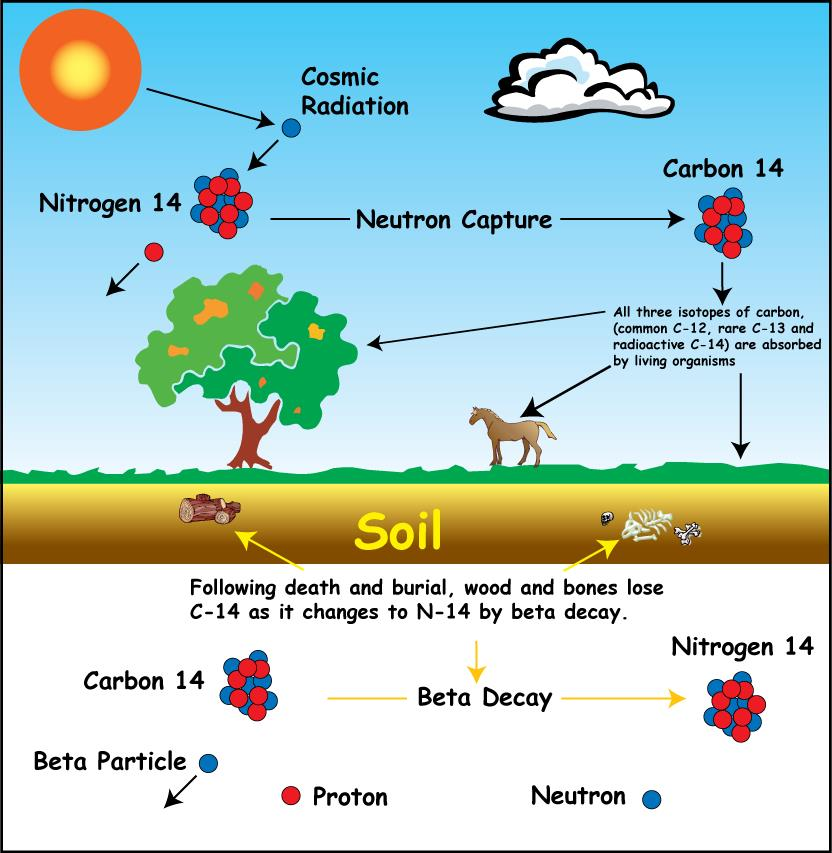

The Basics
The Encyclopaedia Britannica defines the basic concept of radiocarbon dating,
or carbon 14 dating, and explain that Carbon-14 is formed from Nitragen-14 in
the earth’s atmosphere. This Carbon-14 then becomes part of the CO2 molecules in
the atmosphere, and in turn is absorbed by plants and animals. As any living organism continues to
eat and breath, the supply of Carbon-14 in the organism’s body is replenished. However, once the
organism dies there is no known contribution of Carbon-14 to the dead creature. Carbon-14 dating takes
advantage of this phenomenon by using the half-life, or decay rate of Carbon-14 to try to measure how long
the creature has been dead. The Carbon-14 atom is an unstable isotope, which means that the element decays
to a different element over time. In the case of Carbon-14, it decays to Nitrogen-14. The half-life of Carbon-14
is the time it takes for half of a given amount of Carbon-14 to decay into Nitrogen-14. Scientists measure the
amount of Carbon-14 in a sample and compare it to the amount of Carbon-14 they beleive was present in
the organism at the time of death. Scientists typically assume that the amount of Carbon-14 in the
sample at the time of death was the same as the amount of Carbon in the atmosphere today.
Scientists use this data in conjunction with the observable half-life of Carbon 14 to try to
determine how long the organism has been dead. The method of radiocarbon dating
was developed by Willard F. Libby in 1946 and used heavily by
Pleistocene geologists, anthropologists, archaeologists
since that time. (See Source Here) 
×